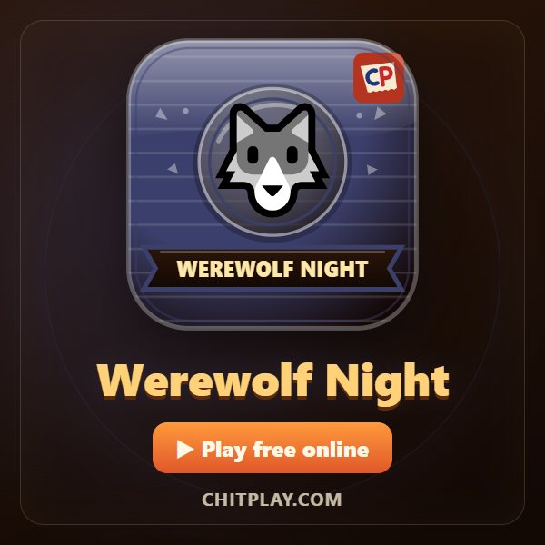
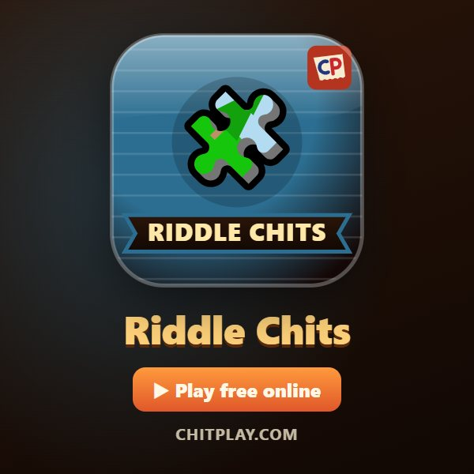
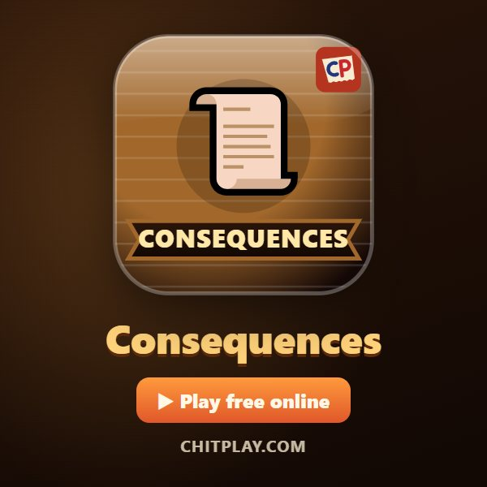

Party games for groups: free online
Party games for three to ten people, for evenings with friends and family: find the spy from the clues, catch the werewolves before morning, answer a friendly truth or dare, guess what most of the table will choose, or write a folded story one line at a time.
Play them on one phone passed round the room, or with everyone on their own phone. And the paper chit game that started ChitPlay, Raja Rani Chor Police, is the classic four-player party game of bluffing.
6 party games to play
- Who Is the Spy? 👥 4–10 players · ⏱ 10–20 minutes
Everyone shares a secret word except the spy. Find them from the clues.
▶ Play Rules and tips 
Werewolf Night 👥 5–10 players · ⏱ 10–20 minutes
Secret roles, quiet nights and loud mornings. Find the werewolves before they take the village.
▶ Play Rules and tips- Truth or Dare 👥 2–10 players · ⏱ 10–30 minutes
Friendly truths and fun dares for every age. Skip any prompt.
▶ Play Rules and tips 
Riddle Chits 👥 2–10 players · ⏱ 5–15 minutes
Open a riddle and pick the answer. A hint costs you a point.
▶ Play Rules and tips- Majority Vote 👥 3–10 players · ⏱ 5–10 minutes
Guess what most of the table will choose. Think like the crowd.
▶ Play Rules and tips 
Consequences 👥 3–8 players · ⏱ 5–10 minutes
Write a story one folded line at a time, then unfold the whole tale.
▶ Play Rules and tips
Questions
What is a good party game for a big group?
Who Is the Spy and Werewolf Night both work well for five to ten players.
Are the party games suitable for every age?
Yes. Questions and dares are friendly, and any prompt can be skipped.
More kinds of games
Board games · Card games · Arcade games · Pen and paper games · Raja Rani Chor Police · All games